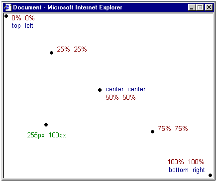
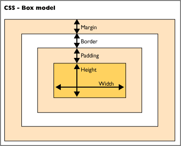

Introdução ao CSS
Índice
1 – Introdução ao CSS
2 – Usando CSS em Scripts internos
4 - Usando CSS nas Tags HTML
5 - Usando CSS em Scripts externos
6 - Cores
7 - Como Trocar o Cursor do Mouse com CSS
8 - Comentários em CSS
9 - Dicas úteis para CSS
10 - Recomendações para HTML, JavaScript e CSS
11 - Funções em PHP que retornam CSS
12 – Referências
1 - Introdução ao CSS
http://www.w3schools.com/css/default.asp
http://www.w3schools.com/css/tryit.asp?filename=trycss_ex
O que é CSS?
Talvez você já tenha ouvido falar em CSS, mas não saiba o que significa exatamente. Nesta lição você saberá o que é e para que serve CSS.
CSS é a abreviatura para Cascading Style Sheets. — Folha de Estilos em Cascata
O que eu posso fazer com CSS?
CSS é uma linguagem para estilos que define o layout de documentos HTML. Por exemplo, CSS controla fontes, cores, margens, linhas, alturas, larguras, imagens de fundo, posicionamentos e muito mais. Aguarde e você verá!
HTML pode ser (in)devidamente usado para definir o layout de websites. Contudo CSS proporciona mais opções e é mais preciso e sofisticado. CSS é suportado por todos os navegadores atuais.
Depois de estudar algumas poucas lições deste tutorial, você estará em condições de projetar uma folha de estilos, usando CSS para dar um grande visual ao seu website.
Qual é a diferença entre CSS e HTML?
HTML é usado para estruturar conteúdo. CSS é usado para formatar conteúdo estruturado.
OK, isto soa um tanto técnico e confuso. Mas, por favor continue lendo. Tudo fará sentido em breve.
Em tempos passados quando a Madonna era virgem e um sujeito chamado Tim Berners Lee inventou a World Wide Web, a linguagem HTML era usada somente para estruturar textos. Um autor podia marcar seus textos definindo "isto é um cabeçalho " ou "isto é um parágrafo" usando tags HTML tais como <h1> e <p>.
À medida que a Web ganhava popularidade, os designers começavam a sentir a necessidade de encontrar meios de construir layout para os documentos online. Para suprir estas necessidades os fabricantes de navegadores (àquela época a Netscape e a Microsoft) inventaram novas tags HTML tais como, por exemplo a tag <font> que se diferenciava das tags originais do HTML pelo fato de destinar-se à layout — e não à estrutura.
Isto adicionalmente teve o efeito de disvirtuar o emprego de tags inicialmente projetadas para estrutura como por exemplo a tag <table> que passaram a ser empregadas para layout. Muitas destas novas tags para layout como a tag <blink> eram suportadas somente por um determinado tipo de navegador. A frase "Você precisa do navegador X para visualizar esta página" tornou-se comum nos websites.
CSS foi inventada para solucionar esta situação, colocando à disposição dos web designers meios sofisticados de projetar layouts suportados por todos os navegadores. E ao mesmo tempo a separação dos estilos de apresentação da marcação dos conteúdos torna a manutenção dos sites bem mais fácil.
Quais são os benefícios do uso de CSS?
CSS é uma revolução no mundo do web design. Os benefícios concretos do uso de CSS incluem:
controle do layout de vários documentos a partir de uma simples folha de estilos;
maior precisão no controle do layout;
aplicação de diferentes layouts para servir diferentes mídias (tela, impressora, etc.);
emprego de variadas, sofisticadas e avançadas técnicas de desenvolvimento.
Fonte: http://www.pt-br.html.net/tutorials/css/lesson1.asp
Sintaxe:
seletor {propriedade: valor;}
Exemplo:
body {color:black;}
Mudará a cor do texto do body para preto.
O que mostra que quando aplicamos CSS ao HTML, o CSS mudará (sobrescreverá) o comportamento do HTML.
Existem as classes e os IDs. Veja como os criamos:
.nome_classe {
margin-left: 1.0in;
}
#nome_id {
margin-left: 1.0in;
}
Classe inicia com ponto (.).
ID inicia com cerquilha (#).
Separando em Camadas com CSS
Uma das funções importantes do CSS é permitir que separemos em camadas o conteúdo do site (HTML) da formatação (CSS) e também o JavaScript em outra camada.
Cada camada em arquivo separado:
conteúdo - .html
formatação - .css
JavaScript - .js
Suprindo Deficiências do HTML
Outra função muito importante do CSS é suprir algumas deficiências do HTML. Por exemplo, o HTML com seus recursos não permite mudar a cor de fundo de uma caixa de texto de um input de formulário e o CSS consegue. Assim vários outros recursos permitidos pelo CSS, como mudar a cor de fundo de uma textarea, de um botão, cor das bordas de uma caixa de texto, cor ao mover o mouse, etc.
Exemplo de CSS que altera o comportamento do input e do select e também quando perde o foco:
input {
background-color: #6D5B52;
border-style: 1px solid;
border-color: black gray gray black;
color: white;
font-family: Verdana, Arial, Helvetica, sans-serif;
font-size: 11px;
}
input:focus {
background-color: #6D5B52;
border-style: 1px solid;
border-color: red red red red;
color: white;
font-family: Verdana, Arial, Helvetica, sans-serif;
font-size: 11px;
}
select {
background-color: #6D5B52;
font:12px verdana, arial, helvetica, sans-serif;
color:white;
}
select:focus {
background-color: #3C1103;
font:12px verdana, arial, helvetica, sans-serif;
color:white;
}Quando no CSS usamos o nome de controles de formulários, o seu comportamento e formatação será substituído pelo comportamento adicionado no CSS (que prevalecerá).
2 - Script interno
Este tipo permite criar CSS dentro da página HTML.
<html><head><title>Exemplo</title><style type="text/css"> body {background-color: #FF0000;} </style></head><body><p>Esta é uma página com fundo vermelho</p></body></html>
Uso nas tags do HTML
Aqui criamos dentro das tags HTML.
<html><head><title>Exemplo</title></head><body style="background-color: #FF0000;"><p>Esta é uma página com fundo vermelho</p></body></html>
Script externo
Este deixa o código CSS num outro arquivo e é o mais indicado para quando temos grandes códigos CSS.
<html> <head> <title>Meu documento</title> <link rel="stylesheet" type="text/css" href="/portal/style/style.css" /> </head> <body>
4 - Uso do CSS nas Tags HTML
Assim como o JavaScript podemos usar o CSS nas tags HTML, como no exemplo abaixo:
Código <input type="text" name="codigo" value="<?php print $codigo;?>" READONLY style="background-color:gray;">
O CSS foi usado para deixar o fundo da caixa de texto com cor cinza, simulando desabilitado, coisa que não se consegue com HTML.
Ouro exemplo:
<h1style="color:red;">Título em cor vermelha</h1>
5 - Uso do CSS em Arquivos Externos
Este é o uso recomendado do CSS, em arquivos externos, para separas as camadas, ficando no arquivo CSS tudo que diz respeito à formatação e ao posicionamento e no HTML o conteúdo.
Assim, se quisermos alterar o conteúdo não haverá problema com a formatação e posicionamento e vice-versa.
Para criar um arquivo externo em CSS, não devemos adicionar as tags <style> ... </style>, apenas o conteúdo como no exemplo seguinte.
style.css
body {
margin: 0;
font-family: verdana, arial, helvetica, sans-serif;
color: #F9E8E5;
/* background-color: #C5F5BF; */
background-image: url("../../images/bg_brown.jpg");
border-top: 15px #082A08 solid; /* Barra acima do Título */
font-size: 14px;
}
#main-title {
margin-bottom: 10px;
margin-left: 0;
margin-right: 0;
padding-top:5px; /* Corrigir no original, que era 15 */
padding-bottom: 8px;
padding-left: 25px;
padding-right: 0;
background-color: #571B07;
border-top: 1px black solid;
border-bottom: 1px black solid;
color: white;
font-weight: bold;
font-size: 18px;
font-family: Verdana, Helvetica, Arial, sans-serif;
}
Para usar este arquivo em um HTML efetuamos o "include" entre as tags <head> e </head>, assim:
<head>
<title>Título da Página</title>
<link rel="stylesheet" type="text/css" href="/portal/style.css" />
</head>
6 - Cores
Nesta lição você aprenderá como aplicar cores de primeiro plano e cores de fundo no seu website. Abordaremos ainda os métodos avançados de controle e posicionamento de imagens de fundo. Serão explicadas as seguintes propriedades CSS:
Cor do primeiro plano: a propriedade 'color'
A propriedade color define a cor do primeiro plano de um elemento.
Considere, por exemplo, que desejamos que todos os cabeçalhos de primeiro nível no documento sejam na cor vermelha. O elemento HTML que marca tais cabeçalhos é o elemento <h1>. O código a seguir define todos os <h1> na cor vermelha.
h1 {color: #ff0000;}
As cores podem ser definidas pelo seu valor hexadecimal como no exemplo acima (#ff0000), com uso do nome da cor ("red") ou ainda pelo seu valor rgb (rgb(255,0,0)).
A propriedade 'background-color'
A propriedade background-color define a cor do fundo de um elemento.
O elemento <body> contém todo o conteúdo de um documento HTML. Assim, para mudar a cor de fundo da página, devemos aplicar a propriedade background-color ao elemento <body>.
Você pode aplicar cores de fundo para outros elementos, inclusive para cabeçalhos e textos. No exemplo abaixo foram aplicadas diferentes cores de fundo para os elementos <body> e <h1>.
body {background-color: #FFCC66;}h1 {color: #990000;background-color: #FC9804;}
Notar que foram aplicadas duas propriedades ao elemento <h1> separadas por um ponto e vírgula.
Images de fundo [background-image]
A propriedade CSS background-image é usada para definir uma imagem de
fundo.
Usaremos a imagem de uma borboleta para exemplificar a aplicação de imagens de
fundo. Você pode fazer o download da imagem mostrada abaixo e usá-la nos seus
experimentos (clique com o botão direito do mouse sobre a imagem e escolha "salvar
imagem como") ou você poderá usar uma outra imagem qualquer ao seu gosto.
Para inserir uma imagem de fundo na página basta aplicar a propriedade background-image ao elemento <body> e especificar o caminho para onde está gravada a imagem.
NB: Notar como foi especificado o caminho para a imagem usando url("butterfly.gif"). Isto significa que a imagem está localizada no mesmo diretório da folha de estilos. Pode ser escolhido um outro diretório para gravar as imagens e o caminho seria url("../images/butterfly.gif") ou até mesmo hospedá-la na Internet: url("http://www.html.net/butterfly.gif").
Imagem de fundo repetida [background-repeat]
No exemplo anterior você observou que a imagem da borboleta repetiu tanto na vertical como na horizontal cobrindo toda a tela? A propriedade background-repeat controla o comportamento de repetição da imagem de fundo.
A tabela a seguir mostra os quatro diferentes valores para background-repeat.
|
Value |
Description |
Example |
|---|---|---|
|
|
A imagem se repete na horizontal |
|
|
|
A imagem se repete na vertical |
|
|
|
A imagem se repete na tanto na horizontal como na vertical |
|
|
|
A imagem não se repete |
Por exemplo, o código mostrado a seguir é para que a imagem não se repita na tela:
body {background-color: #FFCC66;background-image: url("butterfly.gif");background-repeat: no-repeat;}h1 {color: #990000;background-color: #FC9804;}
Image de fundo fixa [background-attachment]
A propriedade background-attachment define se a imagem será fixa ou se irá rolar juntamente com o elemento que a contém.
Uma imagem de fundo fixa permanece no mesmo lugar e não rola com a tela ao contrário da imagem que não é fixa e rola acompanhando o conteúdo da tela.
A tabela a seguir mostra os quatro diferentes valores para background-attachment. Veja os exemplos para constatar a diferença entre imagem fixa e imegem que rola.
|
Value |
Description |
|
|---|---|---|
|
|
A imagem rola com a página |
|
|
|
A imagem é fixa |
Por exemplo, o código abaixo fixa a imagem na tela.
body {background-color: #FFCC66;background-image: url("butterfly.gif");background-repeat: no-repeat;background-attachment: fixed;}h1 {color: #990000;background-color: #FC9804;}
Posição da imagem de fundo [background-position]
Por padrão uma imagem de fundo é posicionada no canto superior esquerdo da tela. A propriedade background-position permite alterar este posicionamento padrão e colocar a imagem em qualquer lugar na tela.
Existem várias maneiras de definir o posicionamento da imagem na tela definindo valores para background-position. Todas elas se utilizam de um sistema de coordenadas. Por exemplo, os valores '100px 200px' posiciona a imagem a 100px do topo e a 200px do lado esquerdo da janela do navegador.
As coordenadas podem ser expressas em percentagem da largura da janeja, em unidades fixas (pixels, centímetros, etc.) ou pode-se usar as palavras top, bottom, center, left e right. A figura a seguir ilustra o modelo de coordenadas:

Na tabela a seguir são mostrados alguns exemplos .
|
Value |
Description |
|
|---|---|---|
|
|
A imagem é posicionada a 2 cm da esquerda e 2 cm para baixo na página |
|
|
|
A imagem é centrada na horizontal e a um quarto (25%) para baixo na página |
|
|
|
A imagem é posicionada no canto superior direito da página |
No exemplo de código a seguir a imagem é posicionada no canto inferior direito da página:
Compilando [background]
A propriedade background é uma abreviação para todas as propriedades listadas anteriormente.
Com background você declara várias propriedades de modo abreviado, economizando digitação e alguns bites, além de tornar a folha de estilo mais fácil de se ler e entender.
Por exemplo, observe as cinco linhas a seguir:
Usando background você consegue o mesmo resultado, abreviando como mostrado abaixo:
A declaração abreviada deve seguir a seguinte ordem:
Se uma das propriedades não for declarada ela assume automaticamente o seu valor default. Por exemplo, a propriedade background-attachment e background-position não foram declaradas no código mostrado a seguir:
Exemplo:
7 - Como Trocar o Cursor do Mouse com CSS
http://networking.mydesigntool.com/viewtopic.php?tid=466&id=31
cursor:default
cursor:pointer
Melhorando o estilo de tabelas com CSS
http://networking.mydesigntool.com/viewtopic.php?tid=468&id=31
As duas propriedades não declaradas assumirão o valor default que como você já sabe são: a imagem rola na tela e será posicionada no canto superior esquerdo (que são os valores default para as propriedades não declaradas).
Sumário
Nesta lição você aprendeu técnicas que não são possíveis com uso de HTML. A brincadeira continua na próxima lição onde examinaremos as possibilidades de estilização das fontes.
Bom tutorial em: http://www.pt-br.html.net/tutorials/css/
http://maujor.com/tutorial/css3-modulo-template-layout.php
http://www.echoecho.com/css.htm
Uso de sprites com CSS:
http://ribafs.org/portal/colaboracoes/1-ribamar-fs/123-sprites-em-css
Templates com CSS
http://ribafs.org/portal/projetos-opensource/84-utilitarios-em-php/143-templates-usando-css
8 - Comentários em CSS
Para comentar código em CSS devemos usar somente o comentário tipo C:
/*
Estas linhas não serão interpretadas
pelo navegador.
*/
A intenção aqui foi apenas de mostrar uma pequena porção dos recursos do CSS, que são muitos.
Para mais detalhes consulte os sites citados ou outros bons tutoriais existentes na Internet.
9 - Dicas úteis para CSS
10 - Recomendações para HTML, JavaScript e CSS
Deixe o código fácil de ser lido
Mantenha-o consistente
Organize bem o código
Use bem a indentação em funções, classes, ids, trechos de código
Crie o HTML antes
Não crie classes grandes, mas várias pequenas
Use o correto doctypy: http://www.alistapart.com/articles/doctype/
Comente seu código
No CSS use
margin: 0 auto; // top, bottom e left, right valores, respectivamente. para centrar divs, parágrafos ou outros elementos em seu layout.
Use a extensão do Firefox, o Firebug para ganhar produtividade
Use no CSS: text-transform: lowercase;
Valide seu HTML (http://validator.w3.org/) e seu CSS (http://jigsaw.w3.org/css-validator/)
Para tamanho da página use pixel e para tamanho de fontes use ems.
Use bastante as listas
Maior compatibilidade entre os navegadores. Inicie o CSS com: * {margin:0;padding:0;}
Use um reset CSS: http://meyerweb.com/eric/thoughts/2007/05/01/reset-reloaded/
http://www.webdesignerdepot.com/2009/08/250-resources-to-help-you-become-a-css-expert/
11 - Funções em PHP que retornam CSS
Referências
Mastering CSS, Part 1: Styling Design Elements
http://www.smashingmagazine.com/2009/08/03/mastering-css-styling-design-elements/
http://www.smashingmagazine.com/2009/08/10/mastering-css-advanced-techniques-and-tools/
40 CSS Web Form Style Tutorials For Web Developers
http://www.websiteoptimization.com/speed/tweak/forms/css.html
Fancy Form Design Using CSS de Cameron Adams na sitepoint (http://sitepoint.com)
pForm - http://www.phpform.org/
http://nidahas.com/2006/12/06/forms-markup-and-css-revisited/
http://www.alistapart.com/articles/prettyaccessibleforms/
Layouts e Templates CSS Free - http://www.smashingmagazine.com/2007/01/12/free-css-layouts-and-templates/
Layouts CSS - http://www.dynamicdrive.com/style/layouts/category/C11/
CSS Reference - http://xhtml.com/en/css/reference/
CSS Reference - http://www.w3schools.com/CSS/CSS_reference.asp

Comments fornecido por CComment